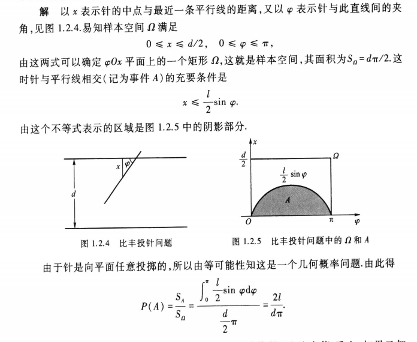

蒲丰投针
历史起源
蒲丰投针模拟圆周率实验是由法国数学家蒲丰于 1733 年提出的一种实验，用于估算圆周率。
实验步骤
1） 取一张白纸，在上面画上许多条间距为a的平行线。
2） 取一根长度为l（l≤a） 的针，随机地向画有平行直线的纸上掷n次，观察针与直线相交的次数，记为m。
3）计算针与直线相交的概率．
以下为比丰投针实验的模拟
意义
比丰投针实验是一种简单但是直观的概率统计方法，它不仅可以用来估算圆周率，也可以用来研究其他几何形状的面积、长度等参数。现在，比丰投针实验已经被广泛应用于概率统计的教学、科研和科普活动中。
原理
通过投针的概率和与直线的交点数量的比值，可以估算出圆周率的值。
实验证明
详见高等教育出版社，茆诗松第三版教材23页